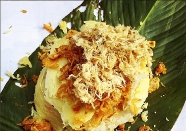

// 0
// 0
 // 1000
// 1000
 // 2000
// 2000
 // 3000
// 3000
 // 4000
// 4000
ベトナム地方料理
三つの地域の多様な料理文化
ベトナムの国全体に広がるのは、美しさが異なる三つの地域です。
各地域には、紛れもない独特の色があります。各地を旅しますが、各地域の料理を楽しんでいるときだけ、
訪問者は微妙な違いを感じることができ、ベトナム料理のユニークなアイデンティティの作成に貢献します。
地域に関係なく、ベトナムの珍味はこの土地に来ると常に国内外の顧客を引き付けると言えるでしょう。
ベトナムは、北、中央、南の3つの地域に分かれています。
また、料理は地域ごとに異なる特性を持っています。
そして、あなたは食べ物を楽しむときに識別することができます。


❇ベトナムの屋台の食べ物の何が特別ですか？
屋台の食べ物が特別なのはなぜですか？夕食はスツールで、プラスチック製のテーブルの横で、
テーブルの上にはミシュランの星を受賞した高級レストランでの夕食とともに思い出に残る蒸しスープがありますか？
世界中で屋台の食べ物を経験した旅行者によると、東南アジアは見逃せない場所です。
ジャカルタからバンコクまで、観光客は数ドルを費やすだけで美味しく魅力的な食事ができます。
東南アジアには、屋台の食べ物を楽しむのに理想的な場所もたくさんあります。
ベトナムは体験する価値のある場所です。
ベトナムの穏やかで新鮮なハーブがいっぱいの屋台の食べ物は、食べるのが一番怠け者の味を呼び覚ますでしょう。

北の料理
北部は味が強く、主に魚醤とエビソースを使用して味を味わいます。
北部の食べ物は塩辛いので、たくさんの緑の野菜と一緒になります。
そして、ハノイ料理は地域の文化を表しています。
ハノイは、フォー、パンタン、パンチャ、ナゲット、春巻きなどの料理で有名です...
封建時代の長い文化の地として、ハノイは北部料理の真髄を保存する場所と考えられています。
料理の仕方から北料理、料理の名前へのプレゼンテーションは非常に簡単ですが、それ自身の繊細さを示しています。
北部の土壌の料理は通常、控えめで穏やかで、バッチまたはワニのわずかな酸味があります。
典型的な料理は、ハノイフォー、パンチャ、春雨、春雨、カニ麺、ホータイシュリンプケーキ、冷凍肉などです。
中部の料理
中央の人々の料理はとても辛いです。
中央の料理を楽しむ他の地域では、少し馴染みがないでしょう。
ここの料理の特徴は辛くて塩辛いからです。
中央地域、特にフエは王室のスタイルに影響されているため、加工も洗練され目を引くものです。
南の料理
南部の料理文化では、マイルドで甘くて酸っぱい味が好まれています。 加工するとき、人々はしばしばミルク、砂糖、またはココナッツミルクを追加する必要があります。 干し魚のソース、海水魚介類で有名な西部地域。 ハムスター、ヘビ、ココナッツゾウムシ、 ヘビの頭の魚などの野生の食べ物は、過去から現在まで、この土地の有名な名物です。 それだけでなく、ベトナム料理は各民族の料理でさらに多様化しています。 わが国の民族グループは、野生の野菜、川魚、野生の肉など、天然の材料や引退した材料を使用して食品を準備します。 これはどこにでもある特別な機能ではありません。
街の屋台の料理街の屋台の料理
ベトナムの屋台は多様で豊富です。
伝統的な料理に加えて、中国、チャム、クメール、西洋諸国など、
ベトナムに住んでいる民族との文化交流と文化の産物である料理もあります。
そして最近、タイ、韓国、日本、トルコなどの国からスナックがあります...
これらの料理は、味と加工スタイルに応じてベトナム人によって受け取られ、変更されます。

Dinh Xuan Truong,番号：17520
専門学校コンピュータ教育学院ビジネスカレッジ
福岡市、南区向野２丁目１０番３０号
電話: (090) 123-4567
Gmail
VietFood@ckg.co.jp